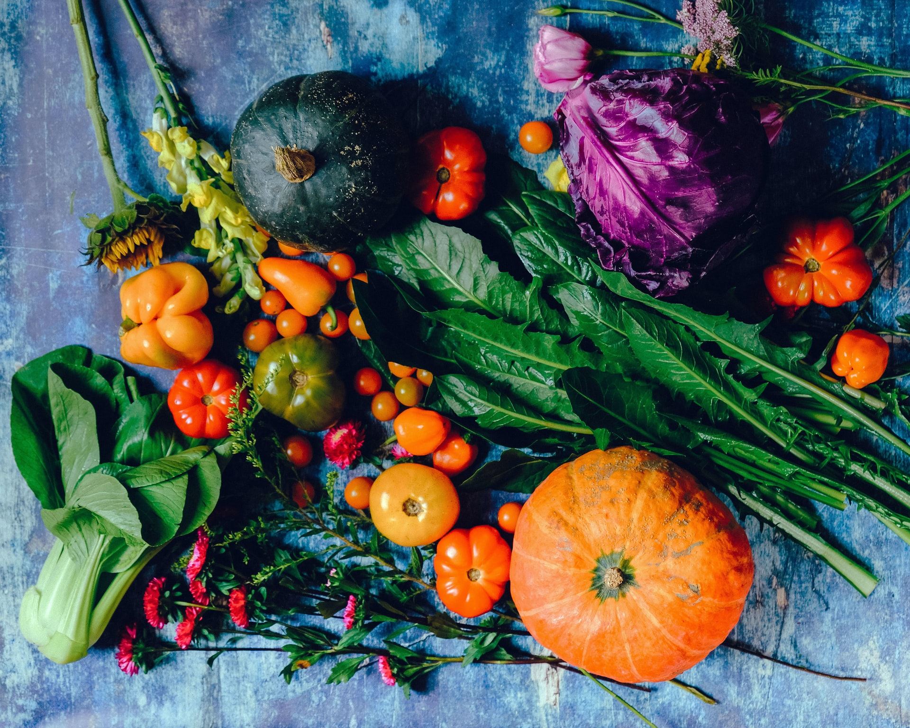

AMAP ?

Le fonctionnement d'une AMAP
Une AMAP naît en général de la rencontre d'un groupe de consommateurs et de paysans (ou artisans transformateurs) prêts à entrer dans la démarche. Ils établissent entre eux un contrat pour une (on distingue en général 2 saisons de production : printemps / été et automne / hiver).
Diversité des produits
Ensemble, ils définissent la diversité et la quantité de denrées à produire pour la saison. Ces denrées peuvent être aussi bien des fruits, des légumes, des oeufs, du fromage, de la viande... La diversité est très importante car elle permet aux partenaires de l'AMAP de consommer une grande variété d'aliments, d'étendre la durée de la saison, et de limiter les risques dus aux aléas climatiques et aux éventuels problèmes sanitaires.
Tous nos produits sont cultivées selon les saisons
Nos producteurs tiennent à respecter le rythme des saison. Retrouvez ci-dessous les produits types en fruits et en légumes selon les différents mois de l'année.
Notre philosophie est différente de celle des grandes surfaces où on retrouve des abberations l'exemple typique étant des tomates en hiver.
Panier de la semaine : du 05 au 11 Avril
(6kg env. de fruits et légumes bio) 20€
*La composition du panier peut être différente selon les aléas climatiques
Legumes :
- 700gr de carottes
- 300gr d'oignons
- 1 chou fleur
- 700gr de blettes
- 800gr de pomme de terre
- 1 salade
- 1 botte de radis rose
Fruits :
- 200 gr de pommes
- 1 pomelo
- 500gr de kiwis